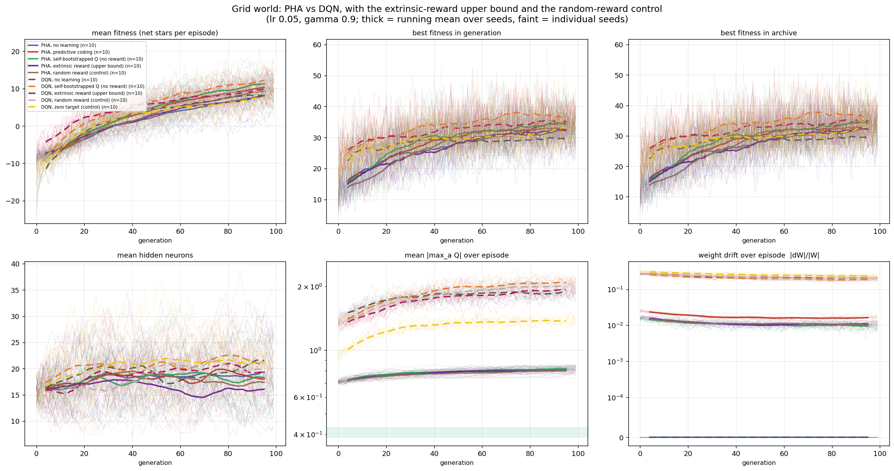
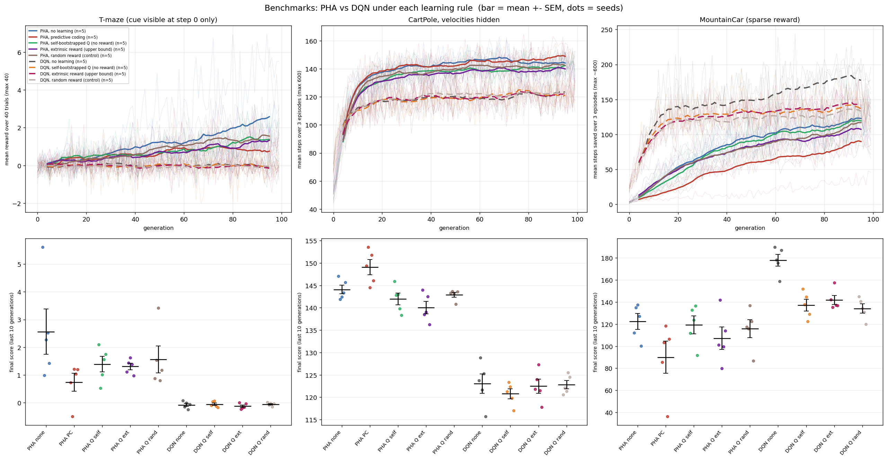

RealBM
Evolving architecture and reward together — does a self-bootstrapped Q signal replace extrinsic reward?
Question
Can evolution search neural architecture and an implied reward at once, if the within-lifetime Q update uses no external reward— only a horizon-normalised bootstrap of the model’s own values?
Target: y = maxa Q(s,a) / Hz + γ maxa′ Q(s′,a′). Compared against extrinsic reward, random reward, and a zero-target control.
Pipeline
4 emitters, λ=20, 60-D CPPN genome with [0,1] hidden budget.
CPPN queries substrate coords; zero diagonal, zero init bias.
Shared grid or single-agent task; optional PC / Q updates.
Archive by spectral radius × hidden size.
Agents & arms
- PHA — recurrent softsign; probabilistic gating; bounded Q head.
- DQN — feedforward softsign hidden; linear Q; replay + target net.
- None / PC / Self / Ext / Rand / Zero — learning-rule ablations.
Takeaways
- Self-bootstrapped Q is best on the grid for both agents.
- Extrinsic reward is not an upper bound under this weak learner.
- On benchmarks, architecture dominates the learning rule.
- The grid advantage does not transfer to T-maze, CartPole, or MountainCar.

Grid scores · last 10 generations
| Variation | PHA | DQN |
|---|---|---|
| No learning | 8.1 ± 1.2 | 8.2 ± 0.7 |
| Predictive coding | 10.2 ± 1.0 | — |
| Self-bootstrapped Q | 11.3 ± 0.9 | 12.0 ± 0.8 |
| Extrinsic reward | 8.1 ± 1.1 | 9.8 ± 0.8 |
| Random reward | 9.2 ± 0.6 | 9.5 ± 0.8 |
| Zero target | — | 7.7 ± 0.7 |
Benchmarks · what each asks
Memory
T-maze
Cue at step 0 only; junction after corridor 4; 40 trials.
PHA none 2.6 ± 0.8 · DQN ≈ 0 · learning hurts PHA (abstention).
Recurrence
CartPole POMDP
Velocities hidden; fitness = steps over 3 episodes.
PHA 140–149 · DQN 121–123 · PC best (149 ± 1.7).
Sparse reward
MountainCar
−1/step until goal; fitness = steps saved when reached.
DQN none 178 ± 5.5 · every learning rule hurts · PHA lags.

Caveats
Benchmarks n=5; dense Q uses reward scale 0.1; BPTT 4 (bench) / 8 (grid); within-lifetime lr=0.05 may be too weak to exploit extrinsic reward; T-maze elites share trials (selection bias).